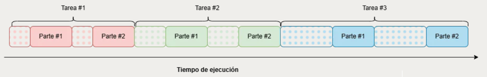
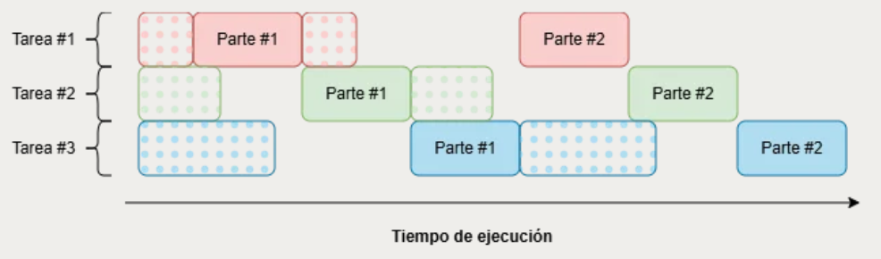
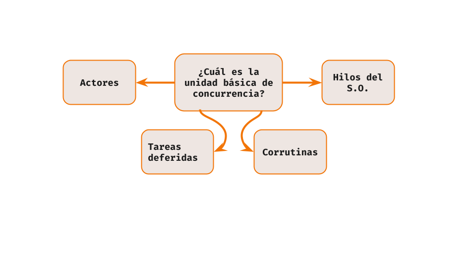
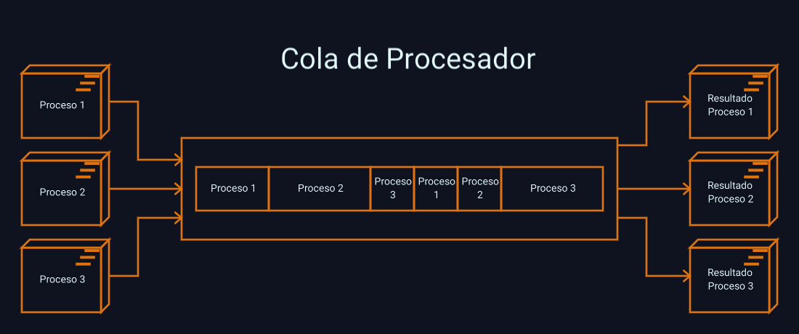
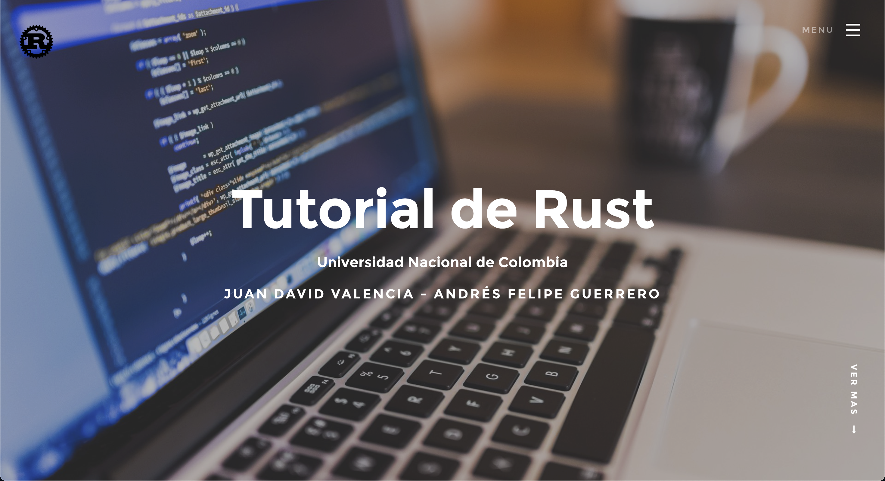
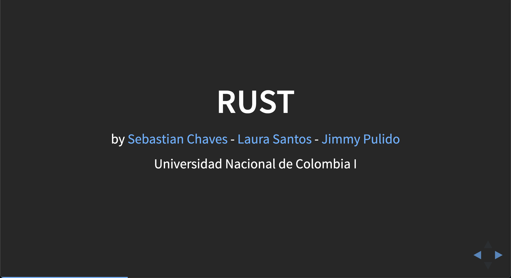
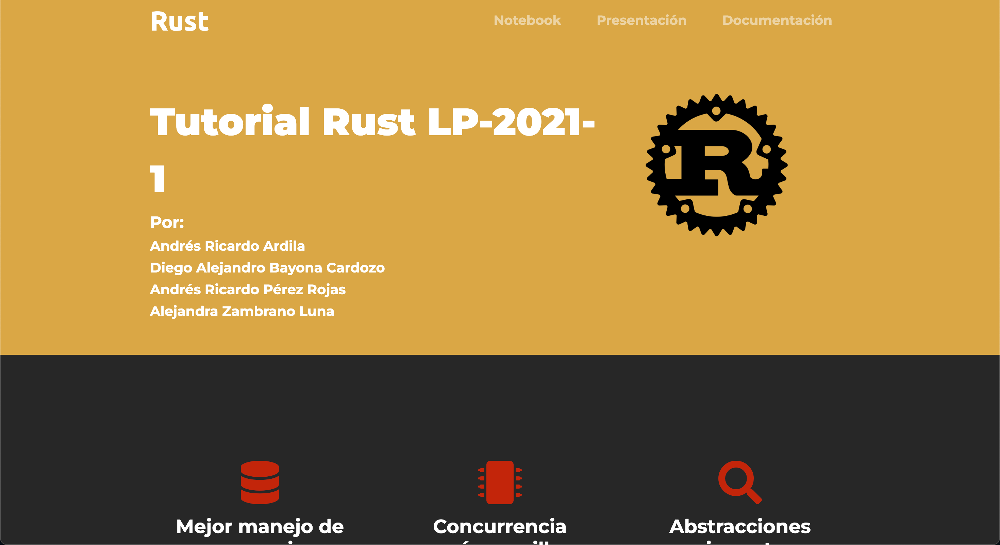

Ownership y movimiento
Cada valor tiene un dueño. Cuando se asigna un String a otra variable, la propiedad se mueve y la variable anterior queda invalidada.
Programación Concurrente
Aprende Rust desde sus fundamentos hasta sus mecanismos de concurrencia: instalación, ownership, borrow checker, tipos, manejo de errores, hilos, canales, sincronización y tareas asíncronas.
Rust empuja errores comunes hacia compilación: uso después de liberar memoria, punteros colgantes, carreras de datos y acceso concurrente sin sincronización.
Cada valor tiene un dueño. Cuando se asigna un String a otra variable, la propiedad se mueve y la variable anterior queda invalidada.
Las referencias permiten leer o modificar sin transferir propiedad. Muchas referencias inmutables pueden coexistir, pero una mutable exige acceso exclusivo.
Option y ResultRust evita depender de valores nulos. Los casos de ausencia o error se modelan como tipos y se resuelven con match.
El compilador infiere tipos cuando puede, pero los parámetros y retornos de funciones se declaran explícitamente para mantener contratos claros.
implLos structs agrupan datos, los enums representan estados y los bloques impl agregan métodos al tipo.
Iteradores, closures y tipos expresivos mantienen código de alto nivel sin pagar penalizaciones innecesarias en tiempo de ejecución.
El notebook propone instalar Rust con rustup, crear un proyecto con cargo y, para ejemplos asíncronos, sumar Tokio como runtime.
rustup configura el compilador, Cargo y el entorno base de Rust.
cargo new rust_playground genera la estructura inicial del proyecto.
cargo run compila y ejecuta. cargo test, fmt y clippy ayudan a mantener calidad.
Crates como rand o tokio amplían el proyecto sin abandonar el flujo de Cargo.
Fragmentos compactos inspirados en el notebook para explicar la mecánica mental de Rust antes de entrar a concurrencia.
fn main() {
let s1 = String::from("Hola");
let s2 = s1;
// println!("{}", s1); // error: valor movido
println!("{}", s2);
}fn longitud(texto: &String) -> usize {
texto.len()
}
fn main() {
let saludo = String::from("Hola Rust");
println!("{}", longitud(&saludo));
println!("{}", saludo);
}fn divide(a: f64, b: f64) -> Option<f64> {
if b == 0.0 { None } else { Some(a / b) }
}
fn main() {
match divide(10.0, 2.0) {
Some(r) => println!("Resultado: {}", r),
None => println!("Division por cero"),
}
}fn main() {
let numeros = vec![1, 2, 3, 4, 5];
let suma: i32 = numeros
.iter()
.filter(|x| *x % 2 == 0)
.map(|x| x * 2)
.sum();
println!("{}", suma);
}%%rust para escribir el contenido de una celda en src/main.rs y ejecutarlo con cargo run. Es práctico para clase, aunque la sintaxis se vea como Python dentro de Colab.
Rust combina hilos del sistema, comunicación por canales, sincronización con Arc/Mutex y asincronía con async/await.


thread::spawnUn closure con move transfiere datos al hilo. join espera su finalización y evita que el programa termine antes.
Arc<Mutex<T>>Arc comparte propiedad entre hilos y Mutex garantiza acceso exclusivo al dato protegido.
mpsc::channelLos sensores concurrentes del notebook envían lecturas de temperatura y humedad a un receptor central.
Estos ejemplos muestran tres estilos complementarios: compartir memoria, pasar mensajes y trabajar con tareas asíncronas.
use std::thread;
fn main() {
let numeros = vec![1, 2, 3];
let handle = thread::spawn(move || {
println!("{:?}", numeros);
});
handle.join().unwrap();
}use std::sync::{Arc, Mutex};
use std::thread;
fn main() {
let dato = Arc::new(Mutex::new(0));
let mut handles = vec![];
for id in 0..3 {
let copia = Arc::clone(&dato);
handles.push(thread::spawn(move || {
let valor = copia.lock().unwrap();
println!("lector {} ve {}", id, *valor);
}));
}
for h in handles { h.join().unwrap(); }
}use std::sync::mpsc;
use std::thread;
fn main() {
let (tx, rx) = mpsc::channel();
let tx_temp = tx.clone();
thread::spawn(move || {
for temp in [22, 24, 27] {
tx_temp.send(("temperatura", temp)).unwrap();
}
});
thread::spawn(move || {
for hum in [65, 62, 70] {
tx.send(("humedad", hum)).unwrap();
}
});
for lectura in rx.iter().take(6) {
println!("{:?}", lectura);
}
}use tokio::time::{sleep, Duration};
async fn cliente(id: u32) {
println!("Cliente {} conectado", id);
sleep(Duration::from_millis(100)).await;
println!("Cliente {} desconectado", id);
}
#[tokio::main]
async fn main() {
for id in 0..10 {
tokio::spawn(cliente(id));
}
}La concurrencia segura no aparece al final: depende de funciones, tipos personalizados y traits que expresan qué puede moverse o compartirse.
SendUn tipo que implementa Send puede transferir su propiedad a otro hilo.

SyncUn tipo que implementa Sync permite compartir referencias entre hilos cuando hacerlo es seguro.

enum, struct e impl ayudan a modelar estados, mensajes y responsabilidades.
Una parte valiosa de Rust es que no obliga a un solo estilo de concurrencia. El diseño depende de si quieres aislar tareas, compartir estado o coordinar muchas esperas de I/O.
Para cálculo pesado o tareas independientes, std::thread permite repartir trabajo real entre núcleos. Combínalo con move para transferir propiedad de forma explícita.
Arc<Mutex<T>> cuando haya estado compartidoEl contador, una cache o una estructura global necesitan una regla clara de acceso. Arc comparte propiedad y Mutex evita escrituras simultáneas peligrosas.
Los canales son ideales para sensores, pipelines y tareas que envían eventos. Separan a quien produce datos de quien decide qué hacer con ellos.
Con Tokio, miles de conexiones o solicitudes pueden avanzar sin crear miles de hilos. Es fuerte para red, archivos, temporizadores y servidores concurrentes.
Enlaces directos al material de la carpeta y a recursos oficiales que conectan con los temas del tutorial.
Vista renderizada del tutorial con instalación, ejemplos y celdas de Rust para Colab.
Presentación PDFDiapositivas de la sesión práctica de Rust y programación concurrente.
The Rust BookGuía oficial para profundizar en ownership, tipos, errores y concurrencia.
TokioRuntime asíncrono usado para tareas concurrentes masivas con async/await.
Versiones anteriores del material para comparar enfoques, ejemplos y recursos usados en otros semestres.

Recursos introductorios, documentación, tutoriales y material de apoyo para aprender el lenguaje.

Presentación interactiva en HTML con notebooks, ejemplos y taller práctico.

Material con presentación, tutorial HTML y un notebook amplio para la sesión práctica.
Página con playground, ejemplos de sintaxis, ownership, borrowing y concurrencia con channels y mutex.